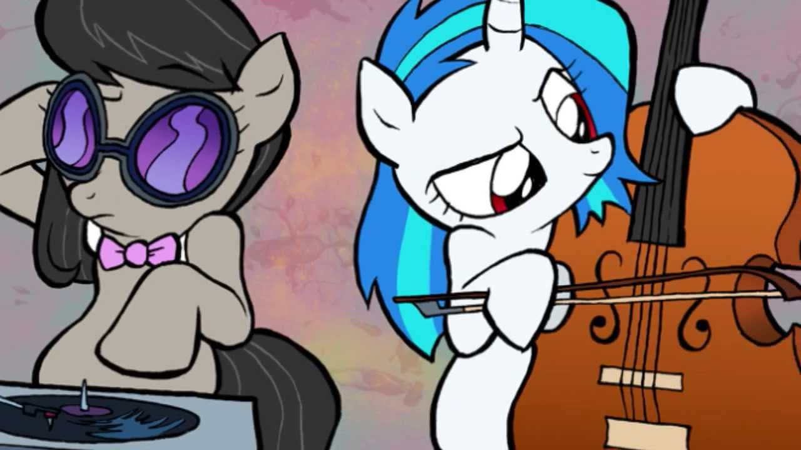

About Octavia
Octavia is an earthpony who performs music with her cello. She is in a relationship with DJ Vinyl Scratch.
Octavia and Vinyl Scratch
Octavia's Characteristics
- She greatly appreciates music and strives to become better at producing it with hours of practice daily.
- She may appear snobbish, But you'll find she isn't if you meet her.
- She is very shy, however if she warms up to you she can be very laid back and somewhat silly.
Octavia's Friends
Octavia has difficulties making friends, however once she does she holds them dear for life. Click on their links to learn more about them